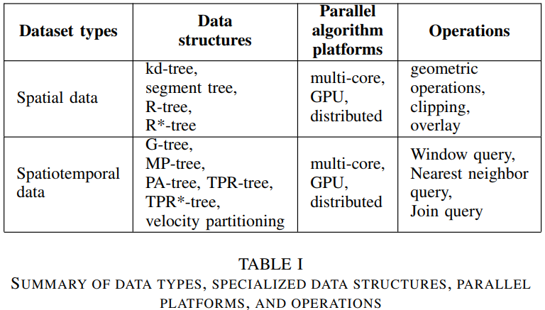

Space and time are two significant aspects of data objects from domains such as geographical information science, social science, neuroscience, epidemiology, meteorology, transportation, and criminology. These data are collected using a variety of sensors and devices such as weather-capturing remote sensors, ground and ocean sensors, traffic cameras and sensors, medical imaging devices, handheld devices and social media, and simulations.
This study focuses on parallel algorithms used for efficient geospatial analysis using large volumes of data. Spatial and spatiotemporal data models and operations are the building blocks of spatial analysis [1]. Traditional relational database systems cannot efficiently handle this kind of data due to the high compute-intensive operations, high volume of data, and the different relationships among data objects. To mitigate these limitations, efficient data models, and parallel algorithms that can harness high-performance computing has been introduced.
There are different data models used in geospatial analysis such as vectors and attributes, point clouds, raster and satellite imagery, census data, cell phone data, drawn images, and social media data [1], [2]. These data models have different characteristics and there are different operations performed on them to exploit useful information.
This survey discusses parallel algorithms used for geometric and related operations on geospatial vector data. Vector data has location information of points or collections of points in the form of lines and polygons. Geometric operations (intersection, union, and difference), spatial join, and overlay are key basic operations that are frequently used and important for many other operations. To handle large volumes of such data and to perform these operations efficiently parallel processing has been introduced by harnessing computing from multi-core, heterogenous, and distributed parallel hardware platforms.
In this work, we propose an extensive literature survey on parallel algorithms used for geometric and related operations in geospatial vector data. This study proposes to survey stateof-the-art parallel and scalable algorithms which can harness the computing of different hardware platforms handling large volumes of data.
Table I shows an overview of the proposed survey and related topics. This survey is beneficial to geographic information science communities and GIS data-related parallel computing researchers to learn novel algorithms and their usage.
